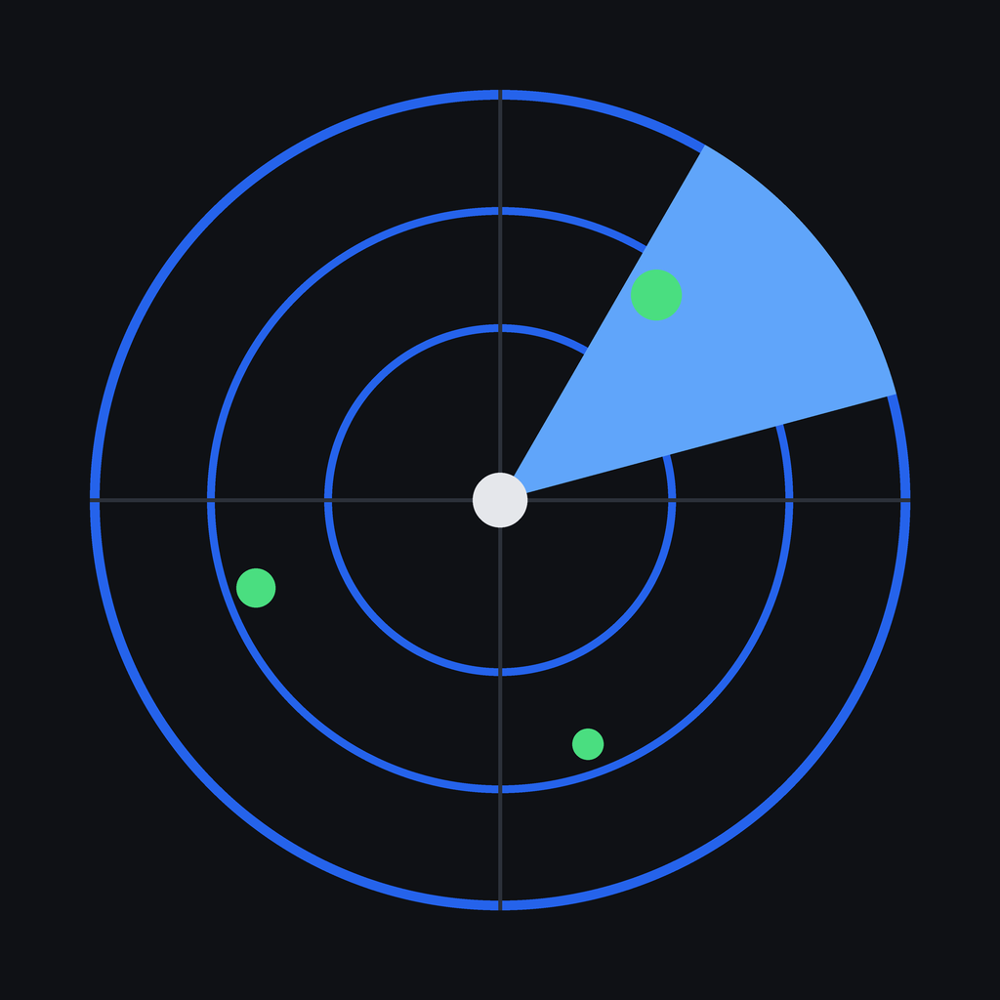

Kanal-Radar
Nutzungsbedingungen
1. Geltungsbereich
Diese Bedingungen gelten für das Werkzeug Kanal-Radar. Es wird ausschließlich vom Betreiber für seine eigenen Konten genutzt. Eine Nutzung durch Dritte ist nicht vorgesehen und nicht möglich.
2. Was Kanal-Radar tut
Kanal-Radar ruft über die offiziellen Schnittstellen von YouTube (Google), TikTok und Instagram (Meta) nur lesend Profil- und Videostatistiken der verbundenen eigenen Konten ab und speichert sie lokal. Verwendete Berechtigungen:
- YouTube:
youtube.readonly,yt-analytics.readonly - TikTok:
user.info.basic,user.info.profile,user.info.stats,video.list - Instagram:
instagram_business_basic,instagram_business_manage_insights
Kanal-Radar veröffentlicht, lädt hoch, löscht, kommentiert oder ändert keine Inhalte und Einstellungen.
3. Verbindung trennen
Jede Verbindung kann jederzeit in den Einstellungen der jeweiligen Plattform widerrufen werden (z. B. TikTok: Einstellungen → Sicherheit → Apps und Dienste; Google: myaccount.google.com/permissions; Instagram: Einstellungen → Apps und Websites).
4. Gewährleistung
Kanal-Radar ist ein privates Werkzeug ohne Gewähr für Vollständigkeit oder Verfügbarkeit der angezeigten Zahlen. Maßgeblich sind die Angaben der Plattformen.
5. Plattformregeln
Die Nutzung der Schnittstellen erfolgt im Rahmen der Entwicklerbedingungen von Google, TikTok und Meta.
Terms of Service (English)
Kanal-Radar is used solely by its operator for the operator's own accounts; there are no other users. It accesses the YouTube, TikTok and Instagram APIs with read-only permissions (listed above) to display profile and video statistics locally. It never publishes, uploads, deletes, comments or changes content or settings. Access can be revoked at any time in each platform's settings. The tool is provided as is, without warranty; the platforms' figures are authoritative. Use of the APIs follows the developer terms of Google, TikTok and Meta.
Kontakt: DrKobold · curlsclout@icloud.com · Stand: 27.11.2026